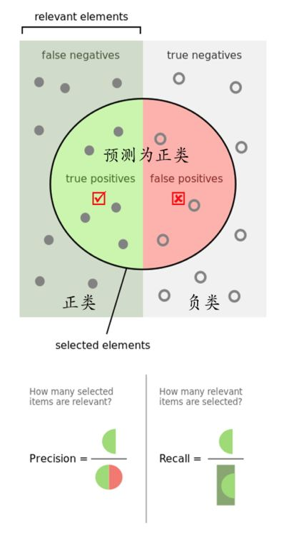
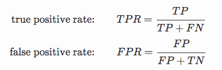
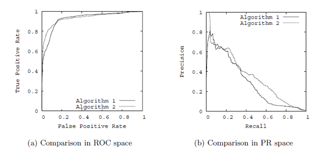

机器学习性能评估指标，尤其是二分类模型的性能评估指标主要是 ROC，PR 曲线。本文主要汇总 ROC / PR 曲线以及涉及到的其它概念。
混淆矩阵
True Positive （TP）： 预测正例（P），预测正确（T），则实际为正例
True Negative （TN）： 预测负例（N），预测正确（T），则实际为负例
False Positive（FP）： 预测正例（P），预测错误（F），则实际为负例 → 误报 (Type I error)
False Negative（FN）： 预测负例（N），预测错误（F），则实际为正例 → 漏报 (Type II error)

如图所示，首先总样本分为正、负例两类（图上矩形分半，正例为目标类别，负例为非目标类别），选取一部分预测为正类（图上的大圆圈），左边为预测正类且预测正确（TP）样本，右边则为预测正类但预测错误（FP）样本。
准确率（Accuracy）
所有预测正确的样本占总样本的比率
$$ ACC = \frac{TP + TN}{TP+TN+FP+FN} $$
在正负样本不平衡的情况下，准确率这个评价指标有很大的缺陷。比如在互联网广告里面，点击的数量是很少的，一般只有千分之几，如果用acc，即使全部预测成负类（不点击）acc 也有 99% 以上，无意义。
精确率 （Precision）
是针对预测结果而言的，表示的是预测为正的样本中有多少是对的。那么预测为正有两种可能了，一种是正确预测为正类（TP），另一种是错误预测为正类（FP）。如上图 P = 圆圈中绿色半圆的比率。
$$ P = \frac{TP}{TP+FP} $$
召回率（Recall）
是针对原来的样本而言的，表示的是样本中的正例有多少被预测正确了。有两种可能，一种是把原来的正类预测成正类（TP），另一种就是把原来的正类预测为负类（FN）。如上图 R = 左半矩形中绿色半圆的比率。
$$R = \frac{TP}{TP+FN} $$
F1 值
是精确率和召回率的调和均值
$$ \frac{2}{F_1} = \frac{1}{P} + \frac{1}{R}$$
ROC 曲线和 AUC
ROC 两个关注指标

- TPR ： 正例中分对的概率（召回率，左半矩形中绿色半圆的比率）
- FPR ： 负例中分错的概率（召回率对应的另一半：右半矩形中红色半圆的比率）
在 ROC 空间中，每个点的横坐标是 FPR，纵坐标是 TPR，这也就描绘了分类器在 TP（真正率）和 FP（假正率）间的 trade-off2。TPR 越高，FPR 越小，模型越优，即 RoC 曲线越靠近左上越好。
举例说明 ROC 画法：一个二分类逻辑回归的问题，4 个样本，真实值是 [0, 1, 0, 1]，用逻辑回归预测的概率值分别是 [0.1, 0.35, 0.4, 0.8] 。那么我们分别以 {0.1, 0.35, 0.4, 0.8} 为阈值，分别判断出每个 prediction 是 𝑇𝑃 /𝐹𝑃 / 𝑇𝑁 /𝐹𝑃 中的哪个，进而得出当前阈值下的 𝑇𝑃𝑅，𝐹𝑃𝑅。也就是通过不断改变正负例概率的判别阈值，在 ROC 空间上画出其对应模型的分类效果。
a) 当阈值为 0.1 时，4 个样本的位置分别是：FP,TP,FP,TP，那么 𝑇𝑃𝑅=22+0=1, 𝐹𝑃𝑅=22+0=1
b) 当阈值为 0.35 时，4 个样本的位置分别是：TN,TP,FP,TP，那么 𝑇𝑃𝑅=22+0=1, 𝐹𝑃𝑅=11+1=0.5
c) 当阈值为 0.4 时，4 个样本的位置分别是：TN,FN,FP,TP，那么 𝑇𝑃𝑅=11+1=0.5, 𝐹𝑃𝑅=11+1=0.5
c) 当阈值为 0.8 时，4 个样本的位置分别是：TN,FN,TN,TP，那么 𝑇𝑃𝑅=11+1=0.5, 𝐹𝑃𝑅=00+2=0
我们就得到了 4 个 ROC 曲线中点 (1,1) , (0.5,1) , (0.5,0.5) , (0,0.5) 就可以画图了。每一个阈值产生一个分类器，其分类效果对应于 ROC 空间上的一个点。如果多个点连成的曲线（RoC 曲线）越靠近左上，说明设定不同阈值都能得到较好的结果，则模型越好。
AUC（Area Under Curve）
ROC 曲线下的面积（<= 1）。AUC 越大， RoC 曲线下方的面积越大，则模型越优。
从 AUC 判断分类器（预测模型）优劣的标准：
- AUC = 1，是完美分类器，采用这个预测模型时，不管设定什么阈值都能得出完美预测。绝大多数预测的场合，不存在完美分类器。
- 0.5 < AUC < 1，优于随机猜测。这个分类器（模型）妥善设定阈值的话，能有预测价值。
- AUC = 0.5，跟随机猜测一样（例：丢铜板），模型没有预测价值。
- AUC < 0.5，比随机猜测还差；但只要总是反预测而行，就优于随机猜测，因此不存在 AUC < 0.5的情况。
PR 曲线
以精确率为 y 轴，以召回率为 x 轴。精确率越高，召回率越高，模型越优，即 PR 曲线越靠近右上越好。
ROC PR 两种曲线

Reference
http://charleshm.github.io/2016/03/Model-Performance/
https://www.cnblogs.com/pinard/p/5993450.html
https://beader.me/2013/12/15/auc-roc/